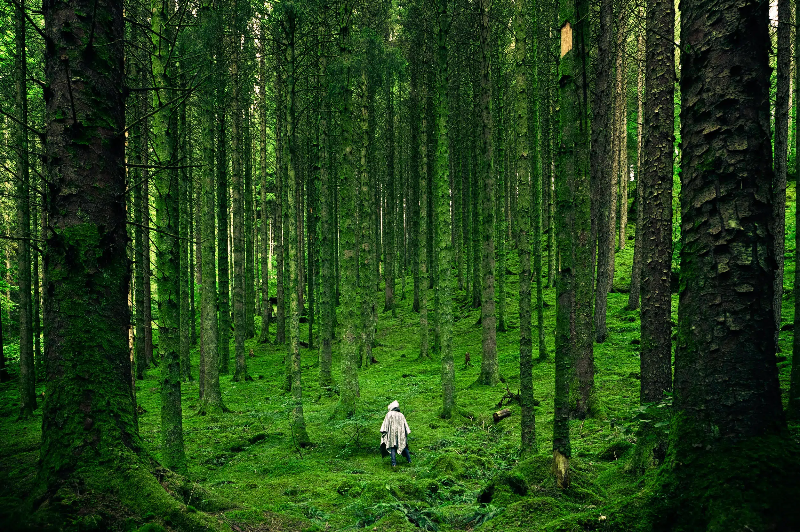
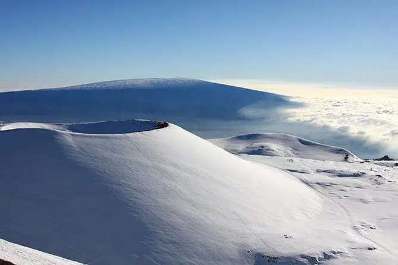

Página Inicial » Curiosidades » 45 curiosidades sobre a natureza que talvez você não conheça
45 curiosidades sobre a natureza que talvez você não conheça
A curiosidades sobre a natureza dizem respeito ao reino ambiental onde não há interferência dos seres humanos, incluindo fenômenos naturais.
2 de novembro de 2021 Lincoln Baroni Atualizado em 2 de novembro de 2021 As curiosidades sobre a natureza dizem respeito ao mundo natural. Ou seja, refere-se aos fenômenos do mundo físico e também à vida em geral. Portanto, diz respeito ao que não inclui objetos e obras humanas. Ademais, também trata do domínio dos diversos tipos de seres vivos complexos, como plantas e animais.
Curiosamente, a palavra natureza parte do latim natura. Por sua vez, significa qualidade essencial, disposição inata e o próprio Universo. Porém, a palavra latina tem origem no grego physis cuja definição envolve a origem de plantas e animais. Apesar disso, entende-se a definição de natureza como algo de maior aprofundamento a partir da aderência do método científico.
Ou seja, o desenvolvimento do método científico moderno aprimorou os conceitos, divisões, ordens e conceitos básicos que dizem respeito às curiosidades sobre a natureza. Sendo assim, conceitos como energia, vida, matéria e outras definições fundamentais moldaram os limites entre o que é natureza e o que não é. Por fim, conheça algumas curiosidades a seguir:
Curiosidades sobre a natureza
Monte Mauna Kea
- A montanha mais alta do mundo na natureza é Mauna Kea, e não o Monte Everest
- Basicamente, desde a base até o topo, essa estrutura geológica e mede um pouco mais de dez mil metros
- Sendo assim, Mauna Kea ocupa metade da ilha de Havaí, que se expande a partir da lava há milhões de anos
- Nesse sentido, outra curiosidade sobre a natureza é que existem 1500 vulcões ativos em todo o planeta Terra
- Curiosamente, o maior vulcão do mundo em terras emersas é o Mauna Loa, com 4.169 metros de altura e 90km de largura, também no Havaí
- Em contrapartida, mas ainda no campo de fenômenos da natureza, os tornados são invisíveis
- Ou seja, porque tem uma formação de nuvem de condensação com gotas de água, sujeira e detritos, acabam sendo imperceptíveis
- Desse modo, o que se vê na natureza corresponde ao momento em que esse funil alcança o solo por meio de um movimento forçado para baixo
- Por outro lado, estima-se que na natureza, as nuvens pesam toneladas
- Em resumo, cada formação de nuvens na natureza possui cerca de quinhentas toneladas de gotículas de água
- Porém, as nuvens flutuam porque a atmosfera ao redor delas é bem mais pesada, o que causa uma espécie de compensação
- Porém, as nuvens flutuam porque a atmosfera ao redor delas é bem mais pesada, o que causa uma espécie de compensação
- Em outras palavras, é a metabolização do gás carbônico com água que cria substâncias no interior da árvore
- No geral, há mais estrelas no céu do que grãos de areias nas praias
- Contudo, o ser humano conhece somente 4% do Universo
Outras curiosidades sobre a natureza
- Sobretudo, não se pode ver a Muralha da China do espaço, mas é possível ver a poluição da natureza que o país criou
- Comumente, os tsunamis podem chegar a velocidades de aproximadamente 805 quilômetros por hora
- Ou seja, um tsunami de natureza simples equivale à potência e velocidade de um avião a jato
- Ainda que 70% da superfície da Terra tenha cobertura por água, somente 2,2% é de água doce
- Mais ainda, na natureza, somente 0,3% da quantidade de água doce está disponível para consumo
- Acima de tudo, o setor agropecuário e o desmatamento da natureza são os principais responsáveis pela degradação ambiental
- Curiosamente, a energia que a Terra recebe durante uma hora de exposição solar é igual à quantidade que os seres humanos usam no ano inteiro
- Antes de mais nada, os movimentos das placas tectônicas é responsável por formar montanhas como o Himalaia
- No geral, o maior terremoto do mundo aconteceu no dia 22 de maio de 1960, com magnitude de 9,5
- Porém, é comum haver terremotos menores em decorrência dos choques na natureza, com o nome de tremores secundários
- Como exemplo, pode-se citar o tsunami do Oceano Índico em 2004, cujos choques primários e secundários equivale a 23 mil bombas atômicas
- Em resumo, existem cerca de 1,2 milhão de espécies de animais com registro
- Contudo, estima-se que essa quantia equivale a pouco mais da metade do que há disponível na natureza para se conhecer
- Por outro lado, no reino vegetal, existem somente 300 mil plantas com registro oficial
- Apesar disso, se sabe que a natureza tem como base nos ecossistemas plantas que produzem oxigênio
Curiosidades sobre recordes de destaque
Galisonga parvilora
- A menor flor do mundo é a Galisonga parvilora, uma espécie de erva daninha na natureza com apenas 1 milímetro de comprimento
- Em contrapartida, a maior árvore do mundo é a sequoia norte-americana, com até 82,6 metros de altura
- Mais ainda, a árvore mais larga do mundo é o cipreste mexicano, com mais de 35 metros de diâmetro
- Curiosamente, um bambu cresce mais de 90 centímetros por dia
- Existem mais de 600 espécies diferentes de eucalipto no mundo
- O lugar mais quente da natureza no mundo é o Vale da Morte, na Califórnia, que chegou a medir 70ºC
- Por outro lado, o lugar mais frio do mundo é a Estação Vostok, com registro recorde de -89,2ºC
- No geral, a maior erupção de vulcão do mundo aconteceu no Monte Tambora, na Indonésia, em 1815
- Em resumo, a explosão teve registro a mais de 2 mil quilômetros de distância
- Ademais, a maior tempestade do século aconteceu nos Estados Unidos em 1993, com força equivalente a um furacão de categoria 3
- Além disso, estima-se que a maior ilha do mundo é a Groenlândia, com 2.175.600 quilômetros quadrados de área
- A maior cordilheira de montanhas é a Cordilheira dos Andes, na América do Sul, com 7600 quilômetros
- Nesse sentido, o lago mais profundo é o Baikal na Rússia, com 1.637 metros
- Ainda, o lago mais alto é o Titicaca, no Peru, a 3.811 metros acima do nível do mar
- No entanto, o oceano mais profundo com certeza é o Oceano Pacífico, com profundidade média de 4.267 metros
E aí, aprendeu curiosidades sobre a natureza? Então leia sobre Sangue doce, o que é? Qual a explicação da Ciência